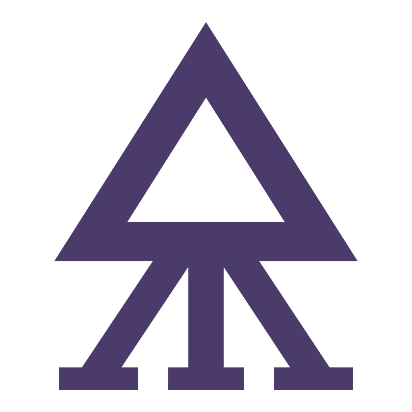
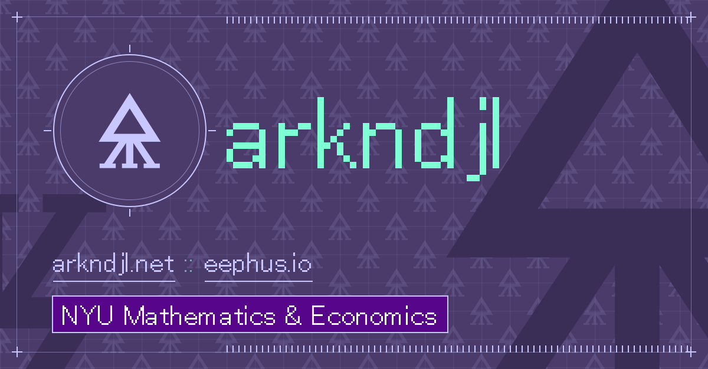
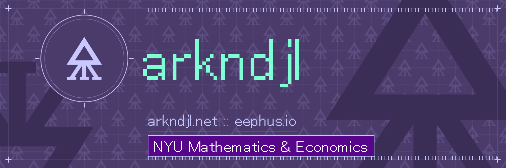
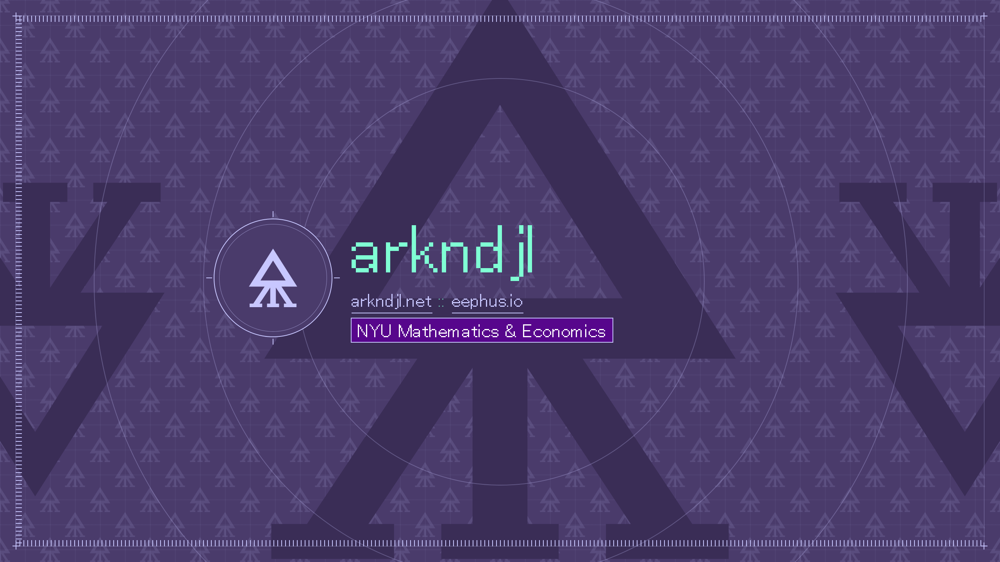
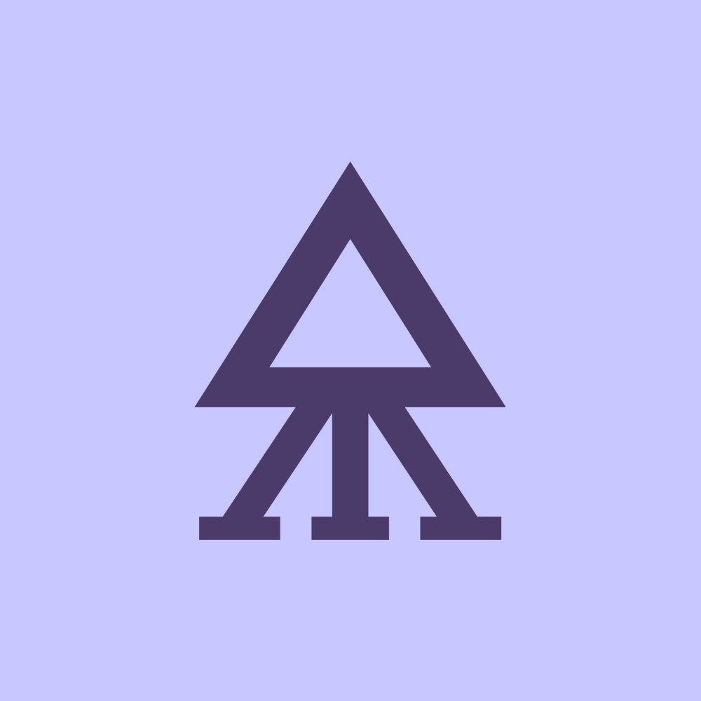
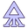
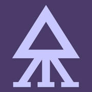

arkndjl
clean, cybergothic, terminal-native. purple ground, lilac structure, teal voice, MS PGothic pixels. the alchemical glyph 🜎 (U+1F70E, philosophers' sulfur) is the mark.
01 · palette
purple · background
site and image ground. hugo: --background
#4a3b6b · rgb(74, 59, 107)site and image ground. hugo: --background
lilac · accent
links, logo, rules, labels. 6.1:1 on purple. hugo: --accent
#c8c7ff · rgb(200, 199, 255)links, logo, rules, labels. 6.1:1 on purple. hugo: --accent
teal · text
body text and wordmark. 8.1:1 on purple. hugo: --foreground
#7fffd4 · rgb(127, 255, 212)body text and wordmark. 8.1:1 on purple. hugo: --foreground
deep purple · secondary
vignettes, secondary surfaces
#3a2d56 · rgb(58, 45, 86)vignettes, secondary surfaces
NYU violet · badge only
the NYU badge, white text, lilac outline
#57068c · rgb(87, 6, 140)the NYU badge, white text, lilac outline
white · badge text
only inside the NYU badge
#ffffff · rgb(255, 255, 255)only inside the NYU badge
02 · logo
emblem · lilac on purple

emblem · purple on lilac
glyph · lilac
glyph · purple (profile picture)
arkndjl
lockup · emblem + wordmark
arkndjl
wordmark · ms pgothic pixel, 128px, no tracking
pixel marks · ARKNDJL, ARKBOARD, ARKLIBRARY, socials (16 × 16 grid)
- clear space around the emblem: one quarter of its diameter on every side.
- minimum size: glyph 16px (favicon), emblem 48px, wordmark 24px.
- the glyph is always lilac on purple, purple on lilac, or teal on purple. no other colours, no gradients, no outlines except the favicon's.
- never stretch, rotate or add effects. the ring ticks stay at north, south, east, west.
03 · typography
ms pgothic · 128 / 32pxarkndjl · ARKBOARD
ms pgothic · 32pxeephus.io Creator · bio lines
labels · 32 / 16pxtracking .25em
ms pgothic · 16pxbody copy on arkndjl.net, 1.5 line height · fira code for code only
noto sans symbols🜎 🜎 🜎the glyph, weight 500, as separator and ornament
linksarkndjl.net::eephus.io
badgeNYU Mathematics & Economics
the typeface is MS PGothic's 16px bitmap strike (MS Gothic's pixel drawings, proportional widths), converted pixel for pixel into an outline web font. use sizes that are whole multiples of 16px (16, 32, 128 ...) so every pixel stays square. lowercase by default; uppercase only for tracked labels and ARKBOARD.
04 · elements
inset frame + corner marks
grid · 48px, lilac at 7%
🜎
rule with glyph ornament
05 · applications

share card · 1200 × 627

x header · 1500 × 500

youtube banner · 2560 × 1440 (safe area 1546 × 423)



profile picture · favicon on light / dark · touch icon